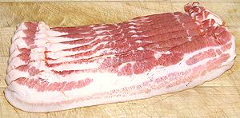
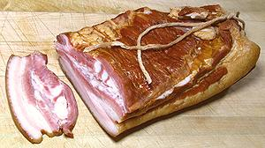

SAFARI
Users
Bacon
 [Streaky Bacon (GB, Canada)]
When we say just "bacon" in the United States, this sliced product is
what we mean. It is pork belly, salt cured, smoked and sliced. It may be
"thick sliced" or "regular", but even thick sliced is rather thin. In
my opinion, it's too thin for many recipe uses. On the other hand, sliced
is essential for a lot of other recipes - though I'd generally still recommend
the "thick sliced". Typically, slices are 10-1/2 inches long, 2 inches wide
and 0.12 inch thick (thick sliced). Flavor, thickness and leanness vary
considerably with brand, so find one you like.
Details and Cooking.
Canadian Bacon / Back Bacon
[Short Cut Bacon (Australia); Back Rashers (Ireland); Irish Bacon (US) | similar: Peameal Bacon (Canada - parts)]
When they say just "bacon" in England, Ireland and much of Canada, this
is what is meant. What we know as bacon in the United States is called
"streaky bacon" in those benighted regions. This product is made from
center-cut boneless pork loin (where we get pork chops from). It may be
salt cured or salt cured and smoked like our bacon, then sliced.
Comparatively, it is generally dry and disappointing in flavor, tasting
more like ham than real bacon. Loin is the least flavorful meat on the
pig and there's not enough fat to compensate for that.
Details and Cooking.
Peameal Bacon
Sold in parts of Canada, this product is eye of center cut pork loin given a sweet pickle cure and is not smoked. It is called "peameal" because it was traditionally rolled in meal made from yellow peas, but today it's usually cornmeal. The photo specimens, from Toronto, Canada, are roasted and drizzled with a honey glaze. Photo by snowpea&bokchoi distributed under license Creative Commons Attribution 2.0 Generic. Details and Cooking.
Slab Bacon
[Streaky Bacon (GB, Canada)]
This is simply regular bacon before slicing. It's generally a deli
product of special quality and somewhat higher price. The photo specimen
was purchased from the deli department of a large multi-ethnic market in
Los Angeles for US $6.19 / pound, compared to the regular specimen above
purchased from a discount market at $4.65 / pound. It was 8 inches long
and 2 inches thick at the thick end.
Details and Cooking.
Ends and Pieces
Unfortunately, pigs are not perfectly rectangular, so producing those trays of thin uniform slices involves a lot of trimming at the edges. These trimmings are packaged and sold through some markets. They tend to be sliced a lot thicker and usually are leaner than sliced bacon. This is the way I buy nearly all my bacon, because I use it mostly in recipes where sliced is really too thin. I buy Bar-M brand (produced by Serve-Rite Meat Co in Los Angeles) which has excellent smoky flavor. Details and Cooking.
Smoked Pork Ribs
 You want flavor? We have flavor, right here. The photo specimen is from one end of a slice of pork side about 3-3/4 inches wide and 2-1/2 inches thick. The whole piece was about 14 inches long and cut from the spare ribs part of the pig. The slice includes the ribs, bacon layer and skin. It's bacon cured and strongly smoked. Roasted it is awesome. Roasting method right here: Smoked Pork Ribs, Roasted.
Pancetta
[Italian Bacon]
This is pork belly rolled up into a cylinder and given a salt cure, but it
is not smoked. This product is often called for in Italian recipes and is
commonly available in the service deli of well stocked meat markets. Subst:
Salt Pork.
Chinese Bacon
[Lop yok, Laap yuk (China)]
This is an intense product usually cut in small pieces to add to soups and stir fries as a flavoring element. It is often fairly strongly flavored with cinnamon and/or star anise. It may be smoked or not. It is meant to be cooked before being eaten. The photo specimens, purchased from a large Asian market in Los Angeles, were made by Prime Foods in New York, so were probably unleaded and contained no melamine.
The larger of the photo specimens was 10-1/2 inches long, 2-1/2
inches wide and 0.8 inch thick. Note that the skin is on and is used
along with the rest. Ingredients: pork belly, sugar, soy sauce, thick
soy sauce, Mei Kwe Lu liquor (distilled from sorghum and roses) salt,
msg, cinnamon, spice, sodium nitrite.
Details and Cooking.
Hungarian Bacon
The definitive characteristic of Hungarian bacon are that it is slab bacon that has been cooked sufficiently to be sliced and eaten without further cooking. It is sometimes made thick, as in the photo specimen which is 2 inches thick, by sticking together two slabs. It may also be a single slab with the rind still on, essential for Gypsy Bacon. It is often rubbed with paprika and garlic, as in the photo, but also may be rubbed with black pepper and garlic.